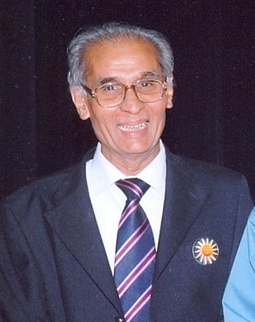
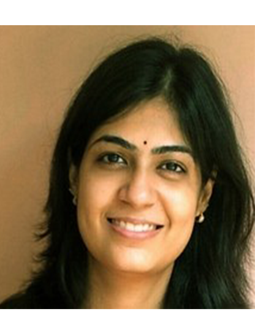
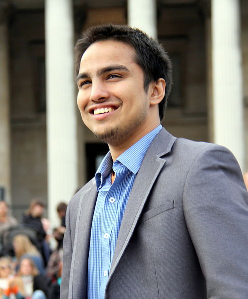

-
 Dr. T V Rao
Dr. T V RaoDesignation - Chairman of TVRLS ,Ahemdabad
Achievements :
• Regarded as "The Father of Indian HRD"
• founder president of the National HRD Network and the Indian Society for Applied Behavioural Sciences (ISABS)
• served as Honorary Director of the Academy of Human Resources Development
• consulting work is in the areas of designing and managing HRD systems of various corporations in India and other Asian countries.
• Was chairperson of IIM A –post graduate Program.
-
Dr. J J Rawal
Jitendra Jatashankar Rawal (born March 30, 1943) is a Gujarati astrophysicist and scientific educator, recognized for his work in the popularisation of science.
Designation- president of The Indian Planetary Society.
Achievements:
• served as Director of the Nehru Planetarium Mumbai
• He has published about 25 research papers in national and international scientific journals
• Rawal has served as Director of the Nehru Planetarium Mumbai. He has published about 25 research papers in national and international scientific journals, and is the president of The Indian Planetary Society.
• Rawal is the author of many scientific and popular science works in the field of astronomy and related subjects
• Dr. J.J. Rawal of the Nehru Planetarium, Bombay, recorded the distance of four satellites, each 35520 km, 57710 km, 96130 km and 71300 km, away from the centre of Neptune.
-
 Dabbawalas
DabbawalasWorking for past 120 years with full Dedication, Time Management, No strike Gathering Experience in Logistics - Mumbai Dabbawalas have created a place of their own
• To understand the logistics of Dabbawalas in delivering 2, 00,000 (2 lakh) Dabbas daily within stipulated time.
• Dabbawalas got Six Sigma, ISO certificate and many other quality certificates & awards
• Dabbawalas have also been invited at product launches, store opening, promotion events in order to promote the particular products, service, etc.
• The visit of English king - Prince Charles and Virgin Atlantis chairman Sir Richards Branson has given Dabbawalas much media attention and respect in the society
-
Mrs. Divya Dave
Designation-Product Design faculty at National Institute of Design, Ahmedabad
Achievements:
• Mechanical engineering at the undergraduate level from MSU, Baroda
• More than 6 Years of industrial experience
-
Mr. Mukund Mudras
• Cofounder of Heckyl Technology
• One of the Top 10 CEOs in India
• Around 14 years of techno-commercial and techno-functional experience in Information Technology field. He has managed strategic initiatives and managed development centres, internet technologies, Software development along with project management and business development. He has handled global teams with onsite-offshore delivery model for numerous complex projects. He has been responsible for client relationship and delivery management. He holds a bachelor degree in electronics engineering and has completed his executive management from IIM-Kozhikode. He has done his diploma in Cyber law and his masters in computer systems from BITS PILANI.
-
Mr. Sidhhant Vats
Winter purslane courgette pumpkin quandong komatsuna fennel green bean cucumber watercress. Pea sprouts wattle seed rutabaga okra yarrow cress avocado grape radish bush tomato ricebean black-eyed pea maize eggplant. Cabbage lentil cucumber chickpea sorrel gram garbanzo plantain lotus root bok choy squash cress potato summer purslane salsify fennel horseradish dulse. Winter purslane garbanzo artichoke broccoli lentil corn okra silver beet celery quandong. Plantain salad beetroot bunya nuts black-eyed pea collard greens radish water spinach gourd chicory prairie turnip avocado sierra leone bologi.